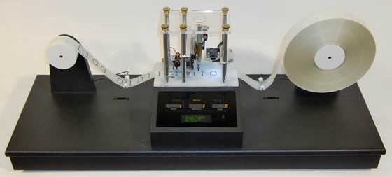

Mașinile Turing sunt mecanisme extrem de elementare de dispozitive de prelucrare a simbolurilor care — în ciuda simplității lor — pot fi adaptate pentru a simula logica oricărui calculator ce poate fi construit. Modelele au fost descrise în 1936 de către Alan Turing.
O mașină Turing capabilă de a simula orice altă mașină Turing se numește mașină Turing universală (sau mașină universală). O definiție mai orientată matematic a fost introdusă de Alonzo Church, ale cărui lucrări din domeniul calculului lambda s-au împletit cu cele ale lui Turing într-o teorie formală a calculului cunoscută sub numele de Conjectura Church-Turing. Aceasta postulează că orice problemă de calcul bazată pe o procedură algoritmică poate fi rezolvată de către o mașină Turing. Deoarece nu se bazează pe o definiție precisă a conceptului de procedură algoritmică, nu are o formulare matematică. În schimb, este posibil de a se defini o noțiune de "sistem acceptabil de programare" și de a se demonstra că "puterea de calcul" a unui asemenea sistem este echivalentă cu cea a unei mașini Turing (se vorbește în acest caz de un limbaj de programare Turing-complet).
La origine, conceptul de mașină Turing reprezenta o persoană virtuală executând o procedură bine definită, schimbând conținutul căsuțelor unui tablou infinit (vizualizat sub forma unei "benzi" infinite), plasând în aceste căsuțe simboluri luate dintr-un ansamblu finit de simboluri. Pe de altă parte, această persoană trebuie să memoreze "starea" în care se află sistemul (sistemul "persoană" poate ocupa un număr finit de "stări"). Procedura poate fi exemplificată de o manieră foarte simplă printr-o listă de instrucțiuni, de genul : dacă sunteți în starea 42 și dacă simbolul din căsuța pe care o priviți este '0', atunci înlocuiți acest simbol printr-un '1', treceți în starea 17, și priviți căsuța alăturată (dreapta sau stânga) .
O mașină Turing este echivalentă cu un automat cu stivă modificat prin relaxarea constrângerii de last-in-first-out a stivei acestuia. (Interesant este că această relaxare aparent minoră permite mașinii Turing să execute o largă varietate de calcule, astfel încât ea poate servi ca model pentru capabilitățile computaționale ale tuturor software-urilor moderne.)
| St.crt | Simbol citit | Simbol scris | Miscare | St. noua |
|---|---|---|---|---|
| s1 | 1 | 0 | R | s2 |
| s2 | 1 | 1 | R | s2 |
| s2 | 0 | 0 | R | s3 |
| s3 | 0 | 1 | L | s4 |
| s3 | 1 | 1 | R | s3 |
| s4 | 1 | 1 | L | s4 |
| s4 | 0 | 0 | L | s5 |
| s5 | 1 | 1 | L | s5 |
| s5 | 0 | 1 | R | s1 |